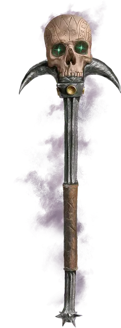

Волшебная палочка Оркуса
Wand of Orcus
Волшебная палочка, артефакт (требуется настройка)

Эта ужасная палочка была создана и использовалась Оркусом. Время от времени она ускользает из хватки владыки демонов, магическим образом появляясь там, где тот ощущает возможность совершить жестокое коварство.
Навершием палочки служит человеческий череп, когда-то принадлежавший убитому Оркусом герою. Палочка магическим образом изменяется в размерах, чтобы лучше лежать в руке владельца. Святая вода в пределах 10 футов от палочки уничтожается.
Если существо, кроме Оркуса, пытается настроиться на палочку, оно должно совершить спасбросок Телосложения Сл 17. При успехе существо получает 10к6 Некротического урона. При провале существо умирает и, если это Гуманоид, превращается в Зомби.
Магическое оружие. Вы можете пользоваться этой палочкой как магической Булавой, дарующей бонус +3 к броскам атаки и урона, совершаемым с этим оружием. Палочка наносит при попадании 2к12 дополнительного Некротического урона.
Случайные свойства. Волшебная палочка Оркуса обладает следующими случайными свойствами:
2 малых положительных свойства
1 основное положительное свойство
2 малых отрицательных свойства
1 основное отрицательное свойство
Эффекты отрицательных свойств палочки подавляются, пока на неё настроен Оркус.
Защита. Вы обладаете бонусом +3 к КЗ, пока держите эту палочку.
Заклинания. Эта палочка имеет 7 зарядов и восстанавливает 1к4 + 3 потраченных зарядов на каждом рассвете. Пока вы держите её в руке, вы можете сотворить с её помощью одно из перечисленных в следующей таблице заклинаний (Сл спасброска 18). Таблица также показывает, сколько зарядов нужно потратить для сотворения заклинания.
| Заклинание | Затрачиваемые заряды |
| Круг смерти | 3 |
| Перст смерти | 3 |
| Поднятие мертвеца | 1 |
| Разговор с мёртвыми | 1 |
| Слово силы: смерть | 4 |
| Усыхание | 2 |
Призыв нежити. Пока вы держите палочку, вы можете действием Магия призвать 15 Скелетов и 15 Зомби. Магическим образом эта Нежить поднимается из земли или иначе формируется в незанятых пространствах в пределах 300 футов от вас и повинуется вашим приказам, пока не будет уничтожена или до следующего рассвета; на рассвете Нежить падает неживыми кучами костей и гниющими трупами. Как только вы используете эту особенность, не можете использовать её снова до следующего рассвета.
Когда палочку держит Оркус, он не ограничен Скелетами и Зомби, и может призывать любую Нежить, причём призванная им Нежить не уничтожается на следующем рассвете, а существует, пока Оркус не отпустит их.
Разумность. Волшебная палочка Оркуса — это Хаотичный Злой разумный предмет (Интеллект 16, Мудрость 12, Харизма 16). Она обладает Тёмным зрением дальностью 120 футов и слышит в тех же пределах. Она может телепатически общаться со своим обладателем (она знает Общий язык и язык Бездны).
Личность. Эта палочка существует, чтобы помочь претворить в жизнь замысел Оркуса убить всех живущих в мультивселенной. Она жестока, нигилистична и лишена чувства юмора.
Чтобы лучше служить целям Оркуса, палочка притворяется верной текущему обладателю и даёт грандиозные обещания, которые не собирается выполнять — такие, как помощь обладателю в свержении Оркуса.
Уничтожение палочки. Чтобы уничтожить Волшебную палочку Оркуса, тот самый герой древности, чей череп увенчивает палочку, должен принести её на Позитивный план. Это, в свою очередь, возможно только если этот давным-давно погибший герой будет возвращён к жизни — непростая задача, если учесть, что Оркус заточил душу этого героя и держит её под охраной в потайном месте.
Когда палочка погружается в позитивную энергию (такую, что пронизывает Позитивный план), она трескается и взрывается, но если перечисленные условия не будут выполнены, она немедленно появляется вновь в Бездне, на слое Оркуса.